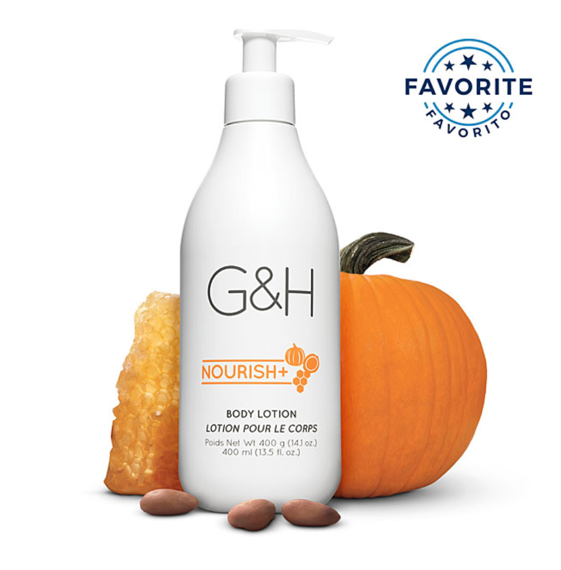
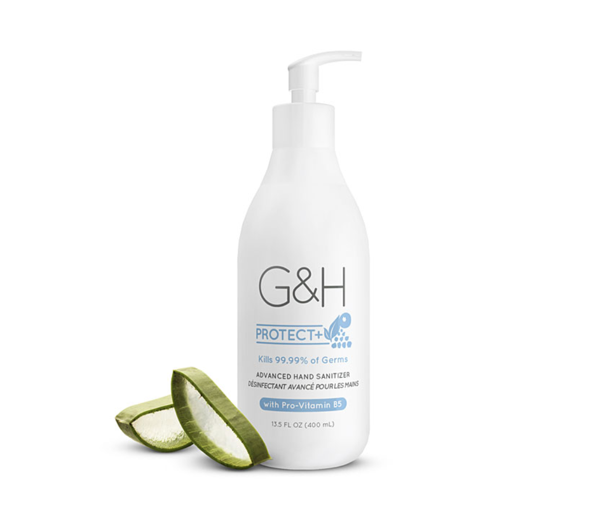
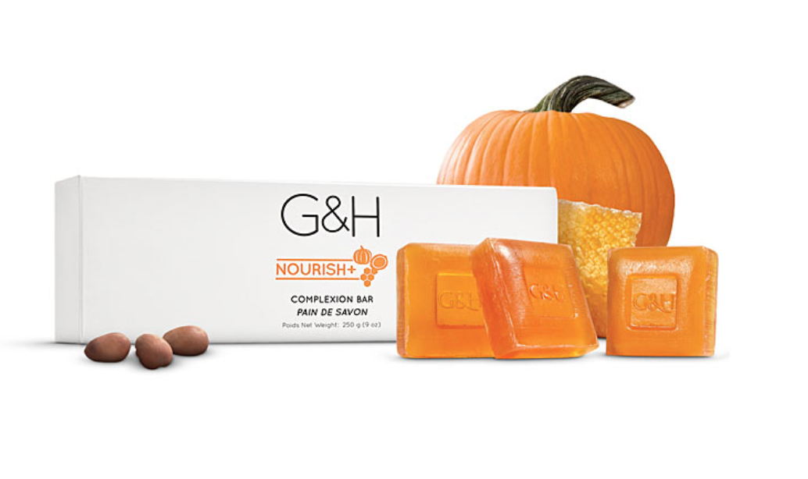
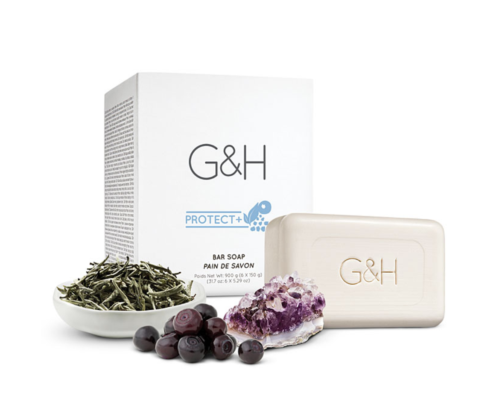
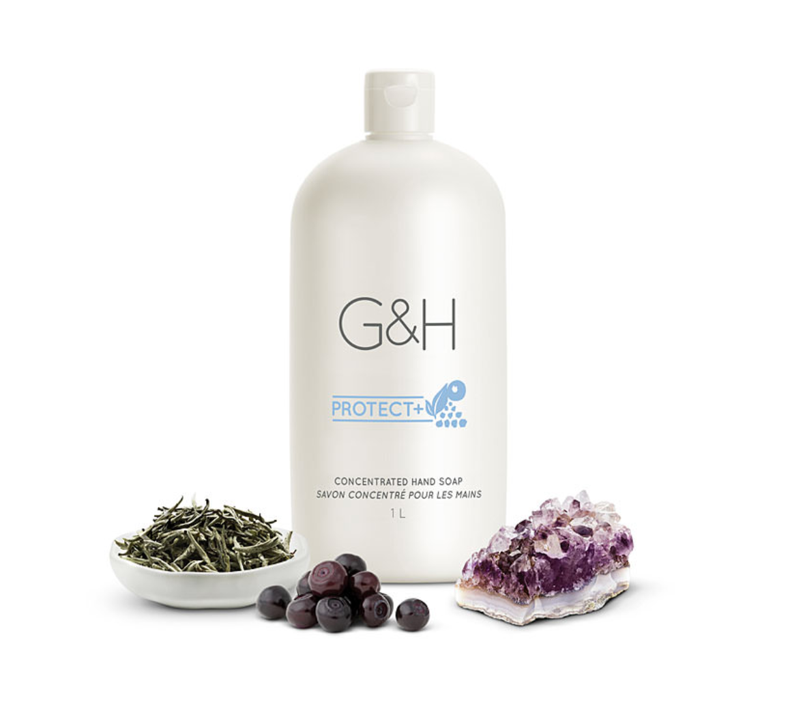
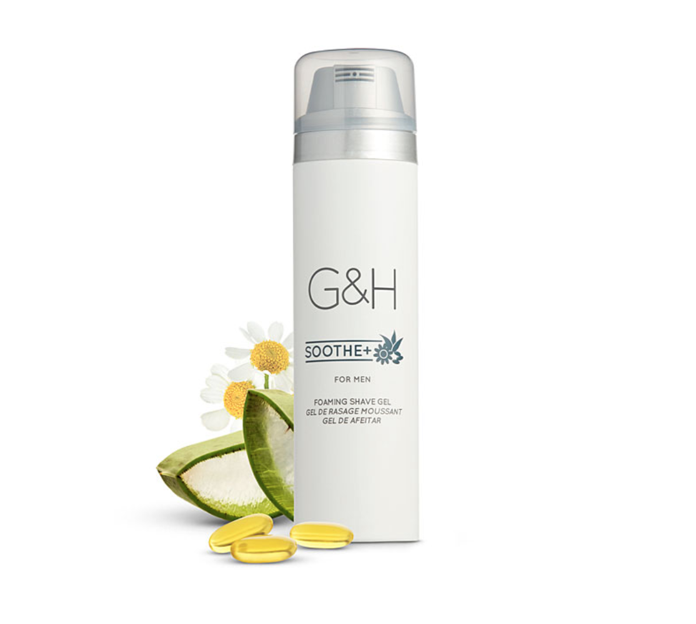

One Small Change
Our products, your message.
G&H Nourish+™ Body Lotion
Relieve and soothe dry skin
Immediately leaves skin feeling softer, looking healthy; visible improvement in skin moisturization.
- Helps rebuild skin’s moisture barrier; helps protect skin from skin-drying environmental damage.
- Instant moisturization; improves skin’s moisture level by up to 129%.
- Long-lasting moisturization; nourishes dry skin for up to 24 hours.
- Dye-free, sulfate-free and wheat-free.
- Dermatologist and allergy tested.
G&H Nourish+™ products hydrate skin with creamy formulas that include an exclusive blend of orange blossom honey, rich shea butter and pumpkin seed oil.
- Orange Blossom Honey is one of nature’s best moisturizers.After extensive testing of hundreds of different honeys, G&H scientists discovered honey produced by bees that get their nectar from orange blossoms is best.
- Shea Butter is naturally rich in vitamins and incredibly nourishing for skin. Throughout history, and even today in Africa, it is used to protect skin against the hot, dry winds of the desert.
- Pumpkin Seed Oil is a super food that is rich in essential fatty acids and vitamins.
G&H Protect+™ Advanced Hand Sanitizer with Pro-Vitamin B5
Kills 99.99% of common germs and bacteria on the skin surface quickly
Protect yourself and your family by keeping your hands clean. Kill 99.99% of common germs and bacteria while moisturizing your hands with Pro-Vitamin B5 and aloe essence.
- Formula with Pro-Vitamin B5 helps to hydrate and soften skin.
- Aloe essence helps keep skin soft and moisturized.
- Non-drying formula.
Advisories
For external use only. Flammable. Keep away from heat or flame.
Do not use:
- On children less than 2 years of age
- On open skin wounds
When using this product, keep out of eyes, ears and mouth. In case of contact with eyes, rinse eyes thoroughly with water.
Stop use and consult a doctor if irritation or rash occurs. These may be signs of a serious condition.
Keep out of reach of children. If swallowed, get medical help or contact a Poison Control Center immediately.
Store between 15–30ºC (59–86ºF). Avoid freezing and excessive heat above 40ºC (104ºF).
G&H Nourish+™ Complexion Bar
Gently cleanse the face and body
A glycerin soap that will improve complexion, leaving your skin soft and nourished.
- Non-drying formula with skin-softening moisturizers leaves skin feeling conditioned and smooth.
- Maintains skin's natural moisture balance.
- Rich, creamy lather rinses clean without residue on skin.
- Suitable for all skin types, including sensitive.
- Dermatologist and allergy tested.
G&H Nourish+™ products hydrate skin with creamy formulas that include an exclusive blend of orange blossom honey, rich shea butter and pumpkin seed oil.
- Orange Blossom Honey is one of nature’s best moisturizers.After extensive testing of hundreds of different honeys, G&H scientists discovered honey produced by bees that get their nectar from orange blossoms is best.
- Shea Butter is naturally rich in vitamins and incredibly nourishing for skin. Throughout history, and even today in Africa, it is used to protect skin against the hot, dry winds of the desert.
- Pumpkin Seed Oil is a super food that is rich in essential fatty acids and vitamins.
G&H Protect+™ Bar Soap
Effectively cleanses and deodorizes skin
Mild bar soap gently cleans, so skin feels soft, conditioned and looking healthy.
- Exclusive odor technology neutralizes body odors and leaves skin smelling fresh.
- Non-drying formula with rich lather leaves skin looking healthy and feeling conditioned.
- Soap Saver design provides indentation at bottom of each bar that allows for minimal waste.
- Triclosan free and wheat free.
- Rainforest Alliance Certified.
- Dermatologist and allergy tested.
G&H Protect+™ products protect skin with a unique blend of white tea, natural minerals and bilberry extract, plus exclusive deodorizing technology that locks onto and neutralizes odor.
- White Tea Extract is known for protective qualities, because it is picked early in the spring when the white buds are young.
- Natural Minerals have been used for bathing treatments for thousands of years.
- Bilberry Extract contains good-for-you compounds called anthocyanins, which have long been used for their beneficial properties.
G&H Protect+™ Concentrated Hand Soap
Deep cleans and removes impurities
Triclosan-free, exclusive technology helps neutralize strong odors, and goes beyond cleansing to leave hands feeling hydrated, soft, and smooth.
- Maintains skin’s natural moisture balance to help avoid dryness associated with frequent hand washing.
- Dermatologist and allergy tested.
- Dye free, sulfate free and wheat free.
G&H Protect+™ products protect skin with a unique blend of white tea, natural minerals and bilberry extract, plus exclusive deodorizing technology that locks onto and neutralizes odor.
- White Tea Extract is known for protective qualities, because it is picked early in the spring when the white buds are young.
- Natural Minerals have been used for bathing treatments for thousands of years.
- Bilberry Extract contains good-for-you compounds called anthocyanins, which have long been used for their beneficial properties.
G&H Soothe+ For Men Foaming Shave Gel
Helps protect against razor burn
The special blend of chamomile, aloe and vitamin E in G&H Soothe+ For Men Foaming Shave Gel softens beard hair for an easy shave from start to finish. Gel formula transforms into a rich foam to condition skin.
- Rich foaming texture increases razor glide.
- Licorice Root extract helps soothe the skin.
- Dermatologist tested.
- Suitable for sensitive skin.
Advisories
Avoid spraying in eyes. Contents under pressure. Do not place in hot water or near radiators, stoves or other sources of heat. Do not puncture or incinerate container (even when empty) or store at temperatures over 50º C/120º F. Extremely flammable: Do not use in the presence of open flame, sparks or while smoking. Use only as directed. Intentional misuse by deliberately concentrating and inhaling the contents can be harmful or fatal. Keep out of reach of children.